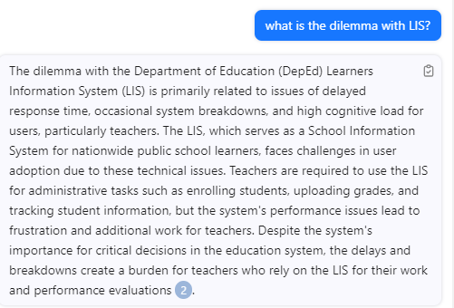
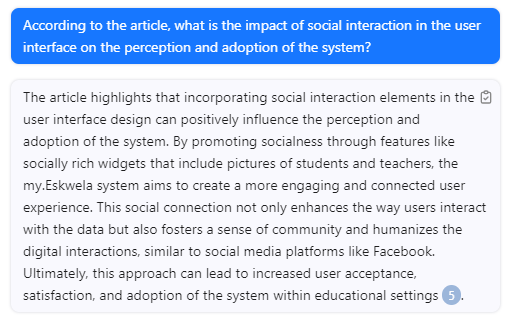
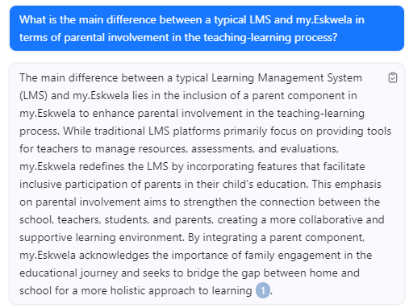

Búsqueda
Búsqueda del artículo por los términos "learning" AND "web development" y 1277 resultados
Artículo No.51
Artículo escogido No.51 "my.Eskwela: Diseño de un sistema de gestión del aprendizaje empresarial para aumentar la red social y reducir la carga cognitiva."
Presentación del artículo en PDF con solo 8 páginas de información de este.
Herramientas
Se utilizó "CHATPDF" para generar respuestas a 5 preguntas del artículo.
Ficha Técnica
| Título | my.Eskwela: Designing An Enterprise Learning Management System to Increase Social Network and Reduce Cognitive Load |
|---|---|
| Autores | Orven E. LlantosMaria Regina Justina E. Estuar |
| Resumen | A typical learning management system (LMS) provides a tool for teachers to upload and create links to resources, create online assessments and provide immediate evaluation to students. As much as it tries to be student centered, most LMS remains a tool for instruction rather than learning. In a learning generation that is bound by very high online social capital, connectedness to the family weakens. my.Eskwela (My School) redefines LMS to include a parent component to address the need for inclusive participation of parents in the teaching-learning process. Basis for re-design came from the low user acceptance of teachers in using similar system. The study premised that designing an environment that evokes a ”feeling of socialness” through social widgets provides a perceived presence of a social environment that will increase usage of the system. In a majority of the focus group discussion, results showed a more positive evaluation of the system. Precisely, for perceived usefulness, perceived ease of use, perceived adoption and intent to use, it can be reasoned that the implementations for reducing the total effort to perform a task and the effect of implementing social interaction in the user-interface has high-impact. |
| Palabras Claves | Trust, confidence in new technology, system socialness, media equation theory, HCI |
| Enlace | https://www.sciencedirect.com/science/article/pii/S1877050918317265 |
| No. Referencias | 35 Referencias |

ChatPDF
1. Da 3 objetivos especifícos del artículo
Los objetivos específicos del artículo "my.Eskwela: Designing An Enterprise Learning Management System to Increase Social Network and Reduce Cognitive Load" de Orven E. Llantos et al. son:
1. Diseñar un sistema de gestión del aprendizaje empresarial (LMS) que aumente las capacidades de las redes sociales en entornos educativos.
2. Reducir la carga cognitiva de los usuarios mediante la implementación de características de diseño y funcionalidades innovadoras en el LMS.
3. Evaluar la aceptación y usabilidad del sistema my.Eskwela mediante una encuesta de aceptación de la tecnología basada en el cuestionario del Modelo de Aceptación de Servicios Móviles (MSAM) [T5].
2. Para qué quieren reducir la carga cognitiva?
Los autores pretenden reducir la carga cognitiva de los usuarios, en concreto de los profesores, que interactúan con el sistema de gestión del aprendizaje empresarial (LMS) denominado my.Eskwela. Mediante la aplicación de características de diseño y funcionalidades innovadoras en el LMS, el objetivo es disminuir el esfuerzo mental necesario para que los profesores comprendan y procesen la información dentro del sistema. La reducción de la carga cognitiva puede mejorar la experiencia del usuario, aumentar la adopción del sistema y, en última instancia, mejorar la eficiencia y eficacia generales de los procesos educativos dentro del sistema escolar del DepEd [T5].
3. Cuál es el dilema con LIS?
El dilema con el Sistema de Información para el Aprendizaje (LIS) del Departamento de Educación (DepEd) está relacionado principalmente con problemas de retraso en el tiempo de respuesta, averías ocasionales del sistema y alta carga cognitiva para los usuarios, en particular los profesores. El LIS, que sirve como sistema de información escolar para los alumnos de las escuelas públicas de todo el país, se enfrenta a problemas de adopción por parte de los usuarios debido a estos problemas técnicos. Los profesores deben utilizar el LIS para tareas administrativas como la matriculación de alumnos, la carga de calificaciones y el seguimiento de la información de los estudiantes, pero los problemas de rendimiento del sistema provocan frustración y trabajo adicional a los profesores. A pesar de la importancia del sistema para la toma de decisiones críticas en el sistema educativo, los retrasos y las averías suponen una carga para los profesores que dependen del SIL para su trabajo y las evaluaciones de su rendimiento [T6].
4. ¿Según el artículo, cuál es el impacto de la interacción social en la interfaz de usuario en la percepción y adopción del sistema?
El artículo destaca que la incorporación de elementos de interacción social en el diseño de la interfaz de usuario puede influir positivamente en la percepción y adopción del sistema. El sistema my.Eskwela fomenta la socialización a través de elementos como widgets socialmente ricos que incluyen fotos de alumnos y profesores, con el fin de crear una experiencia de usuario más atractiva y conectada. Esta conexión social no sólo mejora la forma en que los usuarios interactúan con los datos, sino que también fomenta un sentido de comunidad y humaniza las interacciones digitales, de forma similar a las plataformas de medios sociales como Facebook. En última instancia, este enfoque puede conducir a una mayor aceptación, satisfacción y adopción del sistema por parte de los usuarios en entornos educativos [T1].
5. ¿Cuál es la principal diferencia entre un LMS típico y my.Eskwela en cuanto a la participación de los padres en el proceso de enseñanza-aprendizaje?
La principal diferencia entre un Sistema de Gestión del Aprendizaje (LMS) típico y my.Eskwela radica en la inclusión de un componente para padres en my.Eskwela para mejorar la participación de los padres en el proceso de enseñanza-aprendizaje. Mientras que las plataformas LMS tradicionales se centran principalmente en proporcionar herramientas a los profesores para gestionar recursos, evaluaciones y valoraciones, my.Eskwela redefine el LMS incorporando funciones que facilitan la participación inclusiva de los padres en la educación de sus hijos. Este énfasis en la participación de los padres pretende reforzar la conexión entre la escuela, los profesores, los alumnos y los padres, creando un entorno de aprendizaje más colaborativo y solidario. Al integrar un componente para los padres, my.Eskwela reconoce la importancia del compromiso familiar en la trayectoria educativa y trata de tender un puente entre el hogar y la escuela para lograr un enfoque más holístico del aprendizaje [T6].